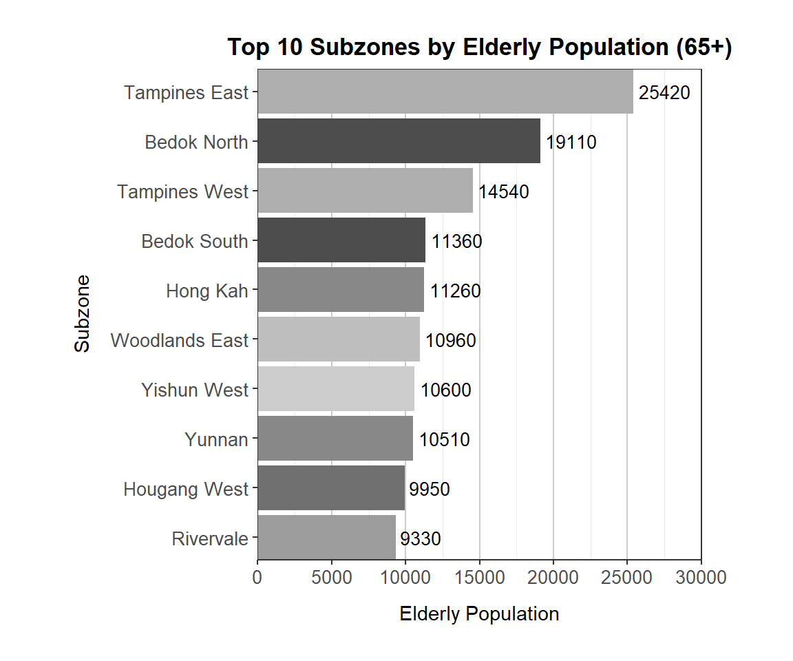
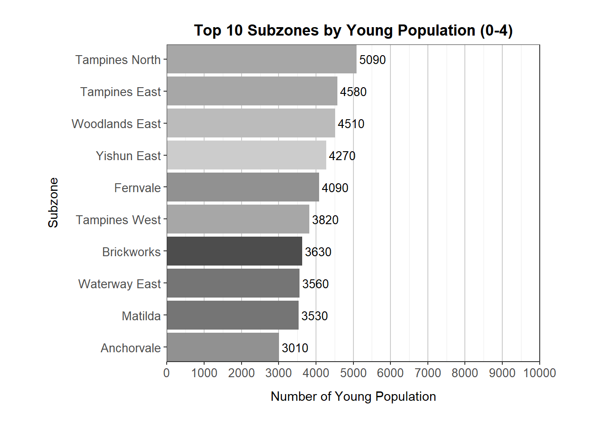
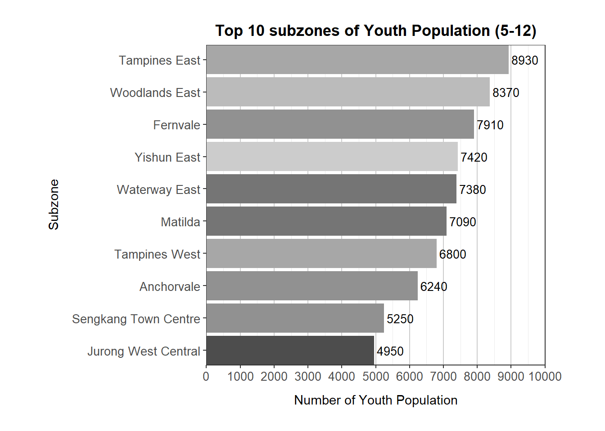
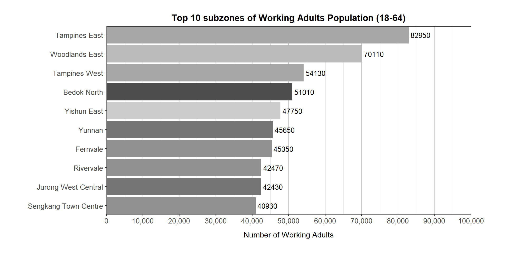
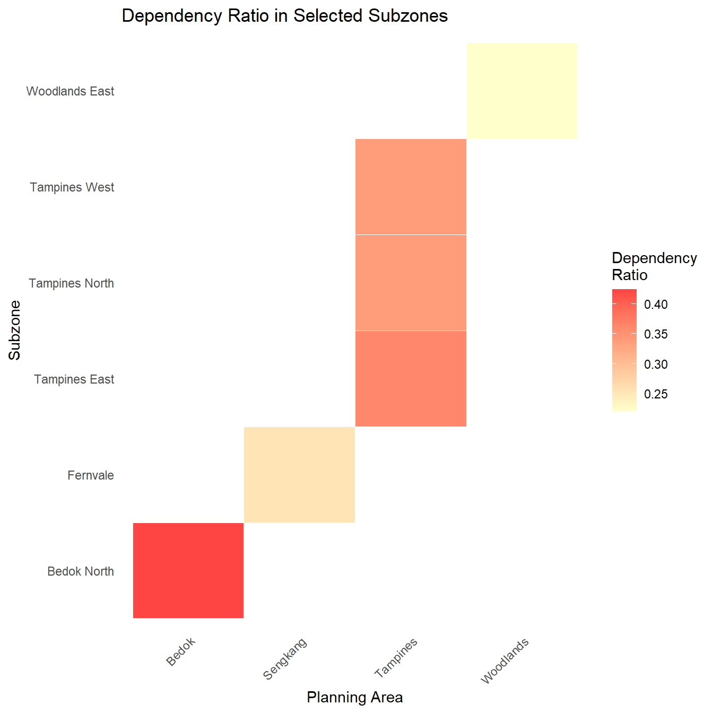

Code
pacman::p_load(tidyverse,patchwork, ggthemes)The Department of Statistics (DOS) Singapore is the national authority responsible for the collection, compilation, analysis and dissemination of official statistics in Singapore. As part of the Ministry of Trade and Industry, DOS plays a pivotal role in supporting evidence-based policy-making and planning by providing timely and reliable demographic, social and economic statistics.
In the context of population studies, DOS regularly published detailed data sets that inform stakeholders on trends in age structure, gender distribution, geographical dispersion and population growth. This would help to analyze population structures, identifying spatial disparities and tracking demographic shifts across time and regions.
The DOS data set taken in 2024 consisted resident population (age and sex) of the planning regions based on the main area and sub-zones.
The data used for this exercise is Singapore Residents by Planning Area / Subzone, Single Year of Age and Sex, June 2024 which can be retrieved from Department of Statistics, Singapore (DOS) Population Trends tab.

As a graphical editor of the media company, the task is to prepare data visualization for the article on demographic structures and distribution of Singapore in 2024.
Using the DOS data set above, this post aims to use appropriate tidyverse family of packages (dplr, tidyr), exploratory data analysis (EDA) and ggplot2 functions and its extensions to uncover:
Dependency Burden: the regions that have a high dependency ratio (high proportion of young and elderly) to find out if there are sufficient facilities (e.g. childcare centers and eldercare facilities)
Urban Planning and Housing Needs: the aging communities in Singapore based on the geographical regions using the subzone-level data
| Library | Description |
|---|---|
| tidyverse | A collection of core packages designed for data science, used extensively for data preparation and wrangling. |
| patchwork | For preparing composite figure created using ggplot2. |
| ggthemes | Extra themes, geoms, and scales for ggplot2. |
The following code chunk uses p_load() of pacman package to check if tidyverse packages are installed into the computer.
pacman::p_load(tidyverse,patchwork, ggthemes)The code chunk below will import Singapore Residents by Planning Area / Subzone, Single Year of Age and Sex, June 2024 data set from DOS’s website using the read_excel() function of the readxl package.
library(readxl)
popdata <- read_excel("C:\\shermainn\\ISSS608new\\Take-home_Ex\\Take-home_Ex01\\data\\respopagesex2024e.xlsx")The data set is in an excel spreadsheet, containing 10,7091 observations (rows) and across 5 variables (columns). Each observation corresponds to an entry from a main planning area (i.e. Ang Mo Kio) that is further split into subzone (i.e. Ang Mo Kio Town Centre) based on the age and sex in 2024.
The following flowchart shows the main variables used and created in this study.
library(DiagrammeR)
library(DiagrammeRsvg)
library(rsvg)
graph <- grViz("
digraph {
node [shape = box]
A [label = 'DOS data set']
B1 [label = 'Dependency Burden', shape = diamond]
B2 [label = 'Urban Planning and Housing Needs', shape = diamond]
C1 [label = 'Age']
C3 [label = 'Planning Area']
C4 [label = 'Subzone']
A -> B1
A -> B2
B1 -> C1
B2 -> C3
C3 -> C4
}
")
# Convert the graph to SVG
svg <- export_svg(graph)
# Save as PNG
rsvg_png(charToRaw(svg), file = "graph_output.png")
Based on the excel spreadsheet, Singapore Residents by Planning Area / Subzone, Single Year of Age and Sex, June 2024, I will be categorizing the data set into what was shown above in the flowchart. The ages of the population will be divided into 3 categories: Young (0-17 years), Working adults (18-64), Elderly (65+). The genders will be divided into female and male. As for the planning areas, there are 55 planning areas (main zones) and 346 subzones.
Below are the list of variables retained for this study which are grouped into 2 categories of Age and Planning areas.
| Category | Description | Type | Encoding Scheme |
|---|---|---|---|
| Age | Dependency Burden | NUM | Young Children (0-4 years) Youth (5-12 years) Teens (13-17 years) Working Adults (18-64 years) Elderly (65+ years) |
| Planning areas | Urban Planning and Housing Needs | NUM | Main zones Subzones |
In order to have a consistent data set to analyze the population age groups, data is cleaned by filter() to set new values into 3 age groups:
Young Children of 0 - 4 years
Youth of 5 - 12 years
Teens of 13 - 17 years
Working Adults of 18 - 64 years
and Elderly of 65 years and above
The values are all within the new column namely Age_Group.
The data set is then further categorized by main zones and subzones by using filter()to remove the totals in columns of Age, Sex, Subzone and ‘-’ in Population as they are repeated values or null values. The values are then all renamed Planning_Area, Subzone, and Total_Population.
library(readxl)
library(dplyr)
# Load the data
popdata <- read_excel("C:\\shermainn\\ISSS608new\\Take-home_Ex\\Take-home_Ex01\\data\\respopagesex2024e.xlsx")
# Clean and process
popdata_cleaned <- popdata %>%
rename(
Planning_Area = `Planning Area`,
Population = `2024`
) %>%
filter(Sex != "Total", Age != "Total", Subzone != "Total") %>%
mutate(
Population = na_if(Population, "-"),
Age = as.numeric(Age),
Population = as.numeric(Population),
Age_Group = case_when(
Age >= 0 & Age <= 4 ~ "Young (0-4)",
Age >= 5 & Age <= 12 ~ "Youth (5-12)",
Age >= 13 & Age <= 17 ~ "Teens (13-17)",
Age >= 18 & Age <= 64 ~ "Working Adults (18-64)",
Age >= 65 ~ "Elderly (65+)",
TRUE ~ NA_character_
)
) %>%
filter(!is.na(Age_Group)) %>%
group_by(Planning_Area, Subzone, Age_Group) %>%
summarise(Total_Population = sum(Population, na.rm = TRUE), .groups = "drop")
# View results
head(popdata_cleaned)# A tibble: 6 × 4
Planning_Area Subzone Age_Group Total_Population
<chr> <chr> <chr> <dbl>
1 Ang Mo Kio Ang Mo Kio Town Centre Elderly (65+) 880
2 Ang Mo Kio Ang Mo Kio Town Centre Teens (13-17) 290
3 Ang Mo Kio Ang Mo Kio Town Centre Working Adults (18-64) 3170
4 Ang Mo Kio Ang Mo Kio Town Centre Young (0-4) 120
5 Ang Mo Kio Ang Mo Kio Town Centre Youth (5-12) 420
6 Ang Mo Kio Cheng San Elderly (65+) 6580The next few plots in this section will be used to analyzed the key variables before diving into Exploratory Data Analysis (EDA).
Identifying the top 10 subzones for each age group is paramount for informed urban planning and resource allocation. By understanding the demographic concentrations and where they are located at would help the government agencies, planners and social service providers to allocate infrastructure, facilities and services for efficiently and effectively.
For instance, subzones with a high elderly proportion would require more eldercare services, accessible transportation and healthcare centers. On the other hand, areas with many children would need sufficient childcare centers, schools and recreational amenities.
# Filter and get top 10 subzones by elderly population
top_elderly_subzones <- popdata_cleaned %>%
filter(Age_Group == "Elderly (65+)") %>%
arrange(desc(Total_Population)) %>%
slice_head(n = 10)
# Plot
e1 <- ggplot(top_elderly_subzones,
aes(x = reorder(Subzone, Total_Population),
y = Total_Population,
fill = Planning_Area)) +
geom_col() +
coord_flip() +
geom_text(aes(label = Total_Population),
hjust = -0.1, size = 3.5) +
labs(
title = "Top 10 Subzones by Elderly Population (65+)",
x = "Subzone",
y = "Elderly Population"
) +
scale_fill_grey(start = 0.3, end = 0.8) +
scale_x_discrete(expand = expansion(mult = c(0.05, 0.05))) +
scale_y_continuous(
breaks = seq(0, 30000, by = 5000),
limits = c(0, 30000),
expand = c(0, 0)
) +
theme_bw() +
theme(
legend.position = "none",
plot.margin = margin(t=20,r=50,b=20,l=40),
plot.title = element_text(hjust = 0.5, face = "bold"),
plot.subtitle = element_text(hjust = 0.5),
axis.title.y = element_text(margin = margin(r = 10)),
axis.title.x = element_text(margin = margin(t = 10)),
panel.grid.major.y = element_blank(),
panel.grid.major.x = element_line(color = "gray80"),
axis.text = element_text(size = 10)
)
e1
top_young_subzones <- popdata_cleaned %>%
filter(Age_Group == "Young (0-4)") %>%
arrange(desc(Total_Population)) %>%
slice_head(n = 10)
# Plot
y1 <- ggplot(top_young_subzones,
aes(x = reorder(Subzone, Total_Population),
y = Total_Population,
fill = Planning_Area)) +
geom_col() +
geom_text(aes(label = Total_Population),
hjust = -0.1, size = 3.5) +
coord_flip() +
labs(
title = "Top 10 Subzones by Young Population (0-4)",
x = "Subzone",
y = "Number of Young Population"
) +
scale_fill_grey(start = 0.3, end = 0.8) +
scale_x_discrete(expand = expansion(mult = c(0.05, 0.05))) +
scale_y_continuous(
breaks = seq(0, 10000, by = 1000),
limits = c(0, 10000),
expand = c(0, 0)
) +
theme_bw() +
theme(
legend.position = "none",
plot.margin = margin(t=20,r=50,b=20,l=40),
plot.title = element_text(hjust = 0.5, face = "bold"),
plot.subtitle = element_text(hjust = 0.5),
axis.title.y = element_text(margin = margin(r = 10)),
axis.title.x = element_text(margin = margin(t = 10)),
panel.grid.major.y = element_blank(),
panel.grid.major.x = element_line(color = "gray80"),
axis.text = element_text(size = 10)
)
y1
# Create top_youth_subzones
top_youth_subzones <- popdata_cleaned %>%
filter(Age_Group == "Youth (5-12)") %>%
arrange(desc(Total_Population)) %>%
slice_head(n = 10)
# Static plot
y2 <- ggplot(top_youth_subzones,
aes(x = reorder(Subzone, Total_Population),
y = Total_Population,
fill = Planning_Area)) +
geom_col() +
geom_text(aes(label = Total_Population),
hjust = -0.1, size = 3.5) +
coord_flip() +
labs(
title = "Top 10 subzones of Youth Population (5-12)",
x = "Subzone",
y = "Number of Youth Population"
) +
scale_fill_grey(start = 0.3, end = 0.8) +
scale_x_discrete(expand = expansion(mult = c(0.05, 0.05))) +
scale_y_continuous(
breaks = seq(0, 10000, by = 1000),
limits = c(0, 10000),
expand = c(0, 0)
) +
theme_bw() +
theme(
legend.position = "none",
plot.margin = margin(t=20,r=50,b=20,l=40),
plot.title = element_text(hjust = 0.5, face = "bold"),
plot.subtitle = element_text(hjust = 0.5),
axis.title.y = element_text(margin = margin(r = 10)),
axis.title.x = element_text(margin = margin(t = 10)),
panel.grid.major.y = element_blank(),
panel.grid.major.x = element_line(color = "gray80"),
axis.text = element_text(size = 10)
)
y2
#| fig-width: 7
#| fig_height: 15
top_young_subzones <- popdata_cleaned %>%
filter(Age_Group == "Teens (13-17)") %>%
arrange(desc(Total_Population)) %>%
slice_head(n = 10)
# Plot
y3 <- ggplot(top_young_subzones,
aes(x = reorder(Subzone, Total_Population),
y = Total_Population,
fill = Planning_Area)) +
geom_col() +
geom_text(aes(label = Total_Population),
hjust = -0.1, size = 3.5) +
coord_flip() +
labs(
title = "Top 10 subzones of Teens Population (13-17)",
x = NULL,
y = "Number of Teens Population"
) +
scale_fill_grey(start = 0.3, end = 0.8) +
scale_x_discrete(expand = expansion(mult = c(0.05, 0.05))) +
scale_y_continuous(
breaks = seq(0, 7000, by = 1000),
limits = c(0, 7000),
expand = c(0, 0)
) +
theme_bw() +
theme(
legend.position = "none",
plot.margin = margin(t=20,r=50,b=20,l=40),
plot.title = element_text(hjust = 0.5, face = "bold"),
plot.subtitle = element_text(hjust = 0.5),
axis.title.y = element_text(margin = margin(r = 10)),
axis.title.x = element_text(margin = margin(t = 10)),
panel.grid.major.y = element_blank(),
panel.grid.major.x = element_line(color = "gray80"),
axis.text = element_text(size = 10)
)
y3top_working_subzones <- popdata_cleaned %>%
filter(Age_Group == "Working Adults (18-64)") %>%
arrange(desc(Total_Population)) %>%
slice_head(n = 10)
# Plot
a1 <- ggplot(top_working_subzones,
aes(x = reorder(Subzone, Total_Population),
y = Total_Population,
fill = Planning_Area)) +
geom_col() +
geom_text(aes(label = Total_Population),
hjust = -0.1, size = 3.5) +
coord_flip() +
labs(
title = "Top 10 subzones of Working Adults Population (18-64)",
x = NULL,
y = "Number of Working Adults"
) +
scale_fill_grey(start = 0.3, end = 0.8) +
scale_x_discrete(expand = expansion(mult = c(0.05, 0.05))) +
scale_y_continuous(
breaks = seq(0, 100000, by = 10000),
limits = c(0, 100000),
expand = c(0, 0),
labels = scales::comma
) +
theme_bw() +
theme(
legend.position = "none",
plot.margin = margin(t=20,r=50,b=20,l=40),
plot.title = element_text(hjust = 0.5, face = "bold"),
plot.subtitle = element_text(hjust = 0.5),
axis.title.y = element_text(margin = margin(r = 10)),
axis.title.x = element_text(margin = margin(t = 10)),
panel.grid.major.y = element_blank(),
panel.grid.major.x = element_line(color = "gray80"),
axis.text = element_text(size = 10)
)
a1
Tampines (Tampines North, Tampines East & Tampines West) is found to have the highest number of young, youth and elderly population where they are all within the top 10 subzones in all 3 group categories.
Bedok North and Tampines East and West seems to have the highest elderly proportion compared to the other areas where they amount to be the top 3 subzones.
As for the young populations, Tampines East, Tampines North and Woodlands East are the top 3 areas with the highest proportion.
Tampines East, Woodlands East and Fernvale are the top 3 subzones for youth population.
When comparing between the youth (5-12 years) and young (0-4 years) age groups, they have similarities where Tampines East and Woodlands East are within the top 3 subzones for these two age groups. In addition, the youth has almost double the number as compared to the young population in both of these two zones as shown in the above comparison plot.
Based on the above univariate analysis, I will only be focusing on the subzones of Tampines North, Tampines East, Tampines West, Bedok North, Woodlands East and Fernvale that were mentioned as the top 3 areas that have the highest elderly and young population as well as highest number of youths.
In order to understand the balance between the working-age population and dependent population (young, youths and the elderly), the dependency ratio is analyzed to gain more insights into the economic and social dynamics of each subzone.

Based on the heat map results, the dependency ratio for the subzones are between 0.20 and 0.45 (every 10 working adults, 4 dependents) which is relatively low and suggests that the working population is currently sufficient to support the dependent population in these subzones.
There is less strain on social services such as healthcare and education as well as the economy as there is a larger working adult population.
For urban planning, the infrastructure for dependents such as the childcare centers, schools and eldercare facilities are not an immediate priority.
The analysis explores Singapore’s 2024 population data, aimed on demographic, geospatial, dependency ratios and urban planning needs. The data set provided by DOS offers detailed information about the resident population by gender, age, and geographical locations. The goal of the analysis was to examine the distribution of various age groups such as elderly, young children and working adults across the different regions and to identify areas that require targeted urban planning particularly for infrastructure such as childcare and eldercare facilities.
Key Findings include:
High concentration of specific age groups: Tampines, Bedok North and Woodlands East have significant populations of young children, youth and elderly where the areas were used for further analysis for targeted resource allocation especially for facilities.
Low dependency ratios ranged from 0.20 to 0.45: Indicates that working age population is sufficient in supporting the dependent population suggesting that there is no immediate strain on social services and infrastructure.
Recommendations for future research:
Areas with high young and elderly populations such as Bedok North can be monitored for further expansion of educational, childcare and eldercare services supplementing additional sources of such as Data.gov.sg.
Assess how the housing demands and amenities align with the demographic trends. For instance, with a high working adult population, there can be more research on different types of facilities and services that this age group would need and analyze if there are sufficient infrastructure to support this group.
Kam, Tin Seong. (2025). Programming Interactive Data Visualization with R. R for Visual Analytics. https://r4va.netlify.app/chap03